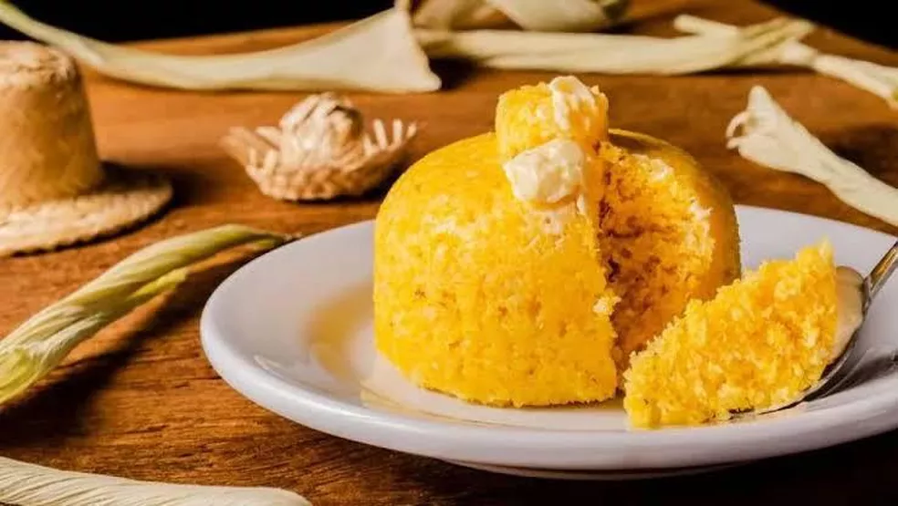
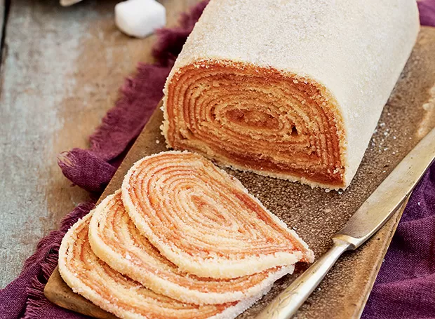
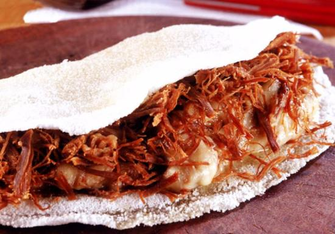
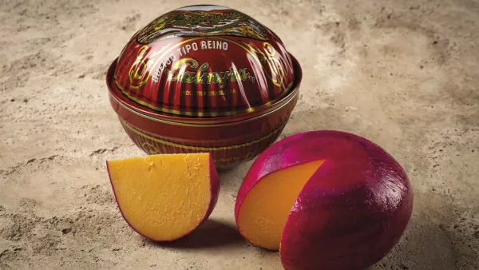
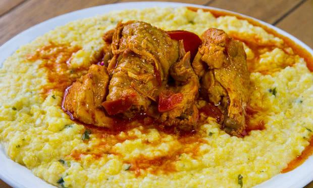

Prato de Cuscuz
Parece simples, mas nem todo mundo sabe fazer o tradicional cuscuz caseiro

Bolo de Rolo
Tradicional e reconhecido como patrimônio imaterial de Pernambuco em 2008

Tapioca
A tapioca, originou-se na cidade de Olinda, onde se consumia intensamente o beiju

Baião de Dois
O nome “baião” vem do estilo musical, que ficou popular no país pelo Rei Luís Gonzaga

Queijo do Reino
Herança holandesa, Pernambuco consome cerca de 80% da produção nacional do Queijo do Reino

Xerém com Galinha
Herança da cozinha luso-brasileira, sendo um prato muito apreciado por aqui